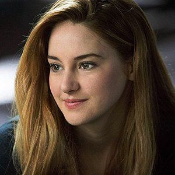
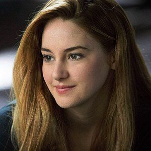

Beatrice Prior a disztopikus Chicagóban él, ahol a társadalom öt csoportra tagolódik, ezeknek mindegyike
egy-egy erény kiművelését írja elő a tagjai számára.
Az év egy bizonyos napján a 16 éveseknek el kell dönteniük, hova akarnak tartozni: a Bátrakhoz, az
Őszintékhez, az Önfeláldozókhoz, a Barátságosakhoz, vagy a Műveltekhez.
Ennek kell szentelniük életük hátralevő részét.
Beatrice azonban egyikbe sem illik bele, ő ugyanis Elfajzott, és mivel kilóg a sorból, veszélyesnek számít.
Ingadozik aközött, hogy a családjával maradjon-e, vagy önmagává váljon.
Olyan döntést hoz, amely mindenki számára meglepetést jelent, még önmagának is.
 

Tris: Makacs, nagy igazságérzetű, az Önfeláldozókhoz tartozó lány, aki a Bátrak csoportját választotta a
szülei helyett.
Elszántan próbál bizonyítani és túlélni a Bátrka között.
Four: Four, más néven Tobias Eaton szintén az Önfeláldozóktól került a Bátrak közé.
A Bátrak csoportjába
tartozik már 2 éve, mikor megismerkedik Trisszel.
Beatrice Prior - Shailene Woodley
Tobias Eaton - Theo James
Natalie Prior - Ashley Judd
Caleb Prior - Ansel Elgort
Jeanine Matthews - Kate Winslet
Christina - Zoe Kravitz